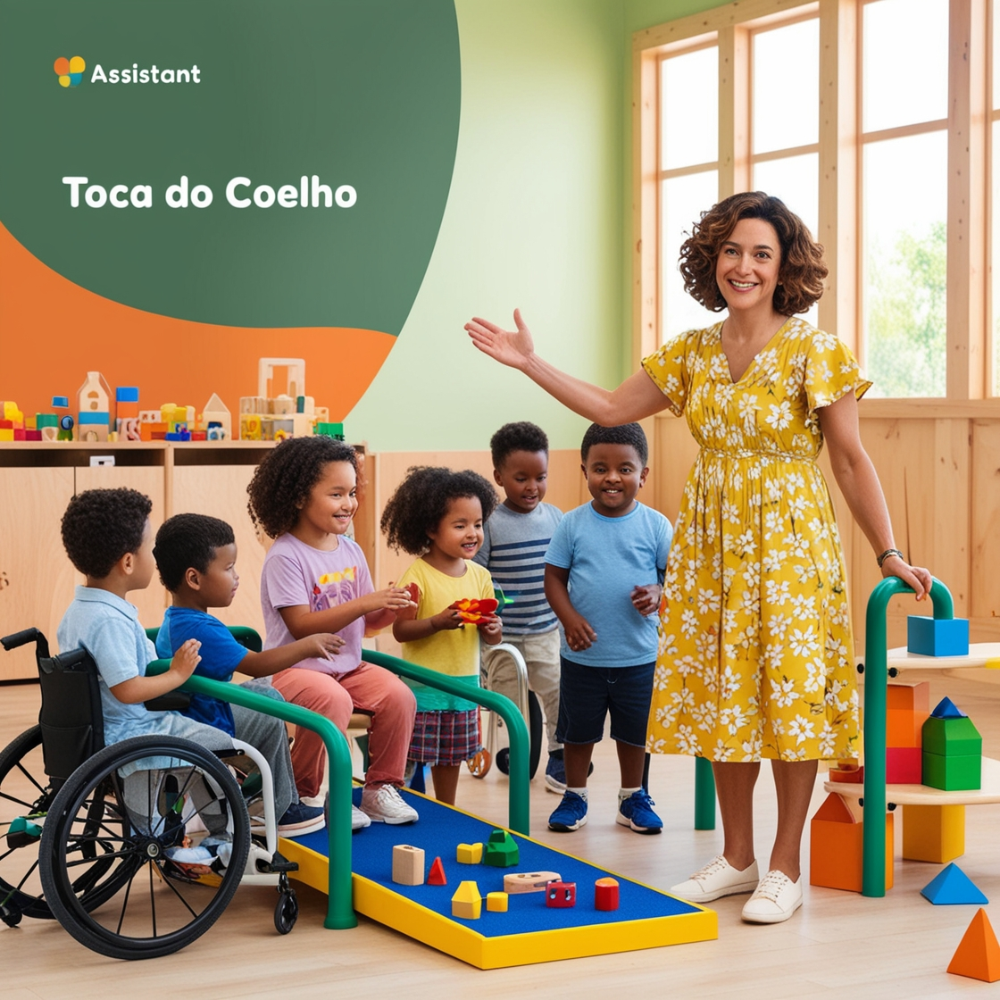
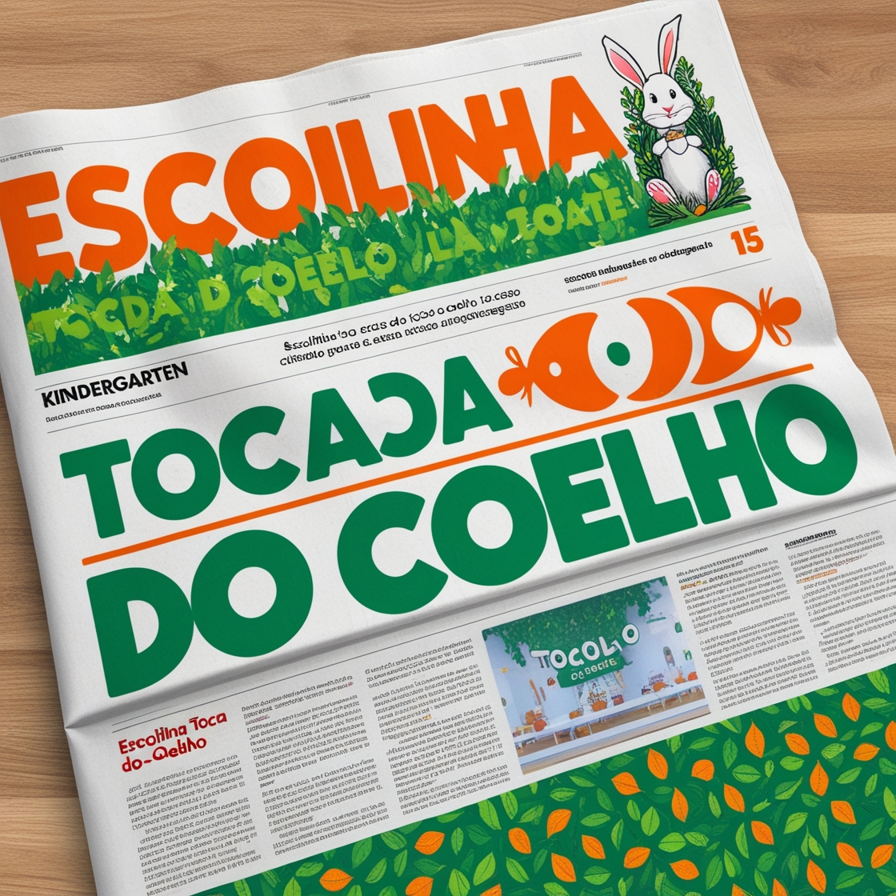

Sobre nós
Na Toca do Coelho, nossa missão é proporcionar um ambiente acolhedor e estimulante para o desenvolvimento integral das crianças. Com mais de [XX] anos de história, somos uma instituição de referência no cuidado e na educação infantil, oferecendo um espaço onde os pequenos podem aprender, crescer e brincar com segurança.
Ao longo de nossa trajetória, nos destacamos pela excelência no ensino e pela dedicação da nossa equipe de profissionais altamente qualificados. Nosso compromisso é com a formação de crianças curiosas, criativas e preparadas para o futuro, sempre respeitando os valores da infância e promovendo o desenvolvimento cognitivo, emocional e social.
Somos reconhecidos por nossa abordagem inovadora e por criar um ambiente familiar que fortalece a confiança entre escola e família, formando uma verdadeira parceria para o bem-estar e o crescimento dos nossos alunos. A Toca do Coelho é um lugar onde as crianças aprendem com alegria, em um ambiente que incentiva a descoberta, a autonomia e a construção de amizades.

Manchetes de destaques

"A escola infantil Toca do Coelho se consolida como referência no setor ao adotar práticas inovadoras que garantem plena acessibilidade para todas as crianças. Com uma infraestrutura adaptada e projetos pedagógicos inclusivos, a instituição se destaca pela criação de um ambiente seguro e acolhedor, onde cada aluno, independentemente de suas necessidades, tem a oportunidade de aprender e se desenvolver com autonomia e igualdade."
"A escola infantil Toca do Coelho tem se destacado no cenário educacional por sua abordagem inovadora, voltada para a inclusão e o desenvolvimento integral das crianças. Com décadas de experiência, a instituição se tornou referência em acessibilidade e ensino personalizado, sempre comprometida com a formação de um ambiente acolhedor e adaptado para todos os seus alunos.
Um dos principais diferenciais da Toca do Coelho é sua infraestrutura, pensada para garantir total acessibilidade a crianças com diferentes necessidades. Rampas, elevadores e espaços adaptados fazem parte de uma estrutura que permite que todos os alunos se movimentem com segurança e autonomia. No entanto, a excelência da escola vai além do espaço físico. A equipe pedagógica é composta por profissionais altamente capacitados, incluindo professores especializados, psicólogos e terapeutas, que trabalham em conjunto para criar um ambiente de ensino inclusivo e personalizado.
Cada criança é vista como um indivíduo único, com seu próprio ritmo de aprendizado. Por isso, a escola adota uma abordagem que respeita essas diferenças, garantindo que todas as crianças, independentemente de suas necessidades, recebam a atenção e o suporte adequados para desenvolverem suas habilidades ao máximo.
Além disso, a Toca do Coelho valoriza o envolvimento da família no processo educativo, promovendo uma verdadeira parceria entre pais e escola."